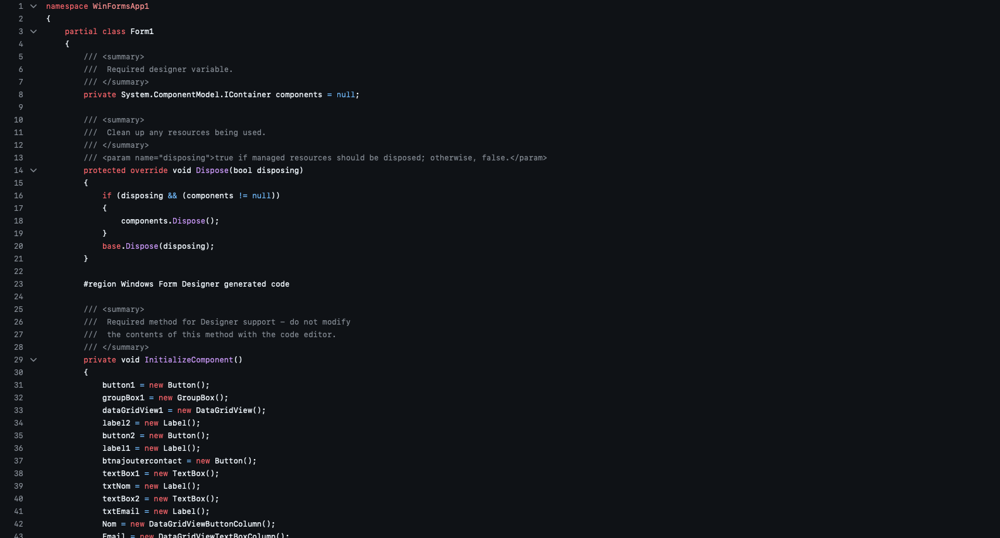

TDAH et réseaux sociaux : un lien inquiétant
Examen des études récentes montrant comment l'usage intensif des réseaux affecte l'attention et la capacité de concentration.
Lire l'articleComment les nouvelles technologies peuvent-elles résoudre les problèmes qu'elles ont elles-mêmes créés ?
Articles et réflexions autour du paradoxe technologique — placeholders, liens à remplacer.

Examen des études récentes montrant comment l'usage intensif des réseaux affecte l'attention et la capacité de concentration.
Lire l'article
Présentation des apps (Forest, Brain Focus) et de leurs mécanismes pour restaurer l'attention et diminuer les interruptions.
Lire l'article
Analyse des mécanismes psychologiques qui rendent les interfaces addictives et des enjeux sociétaux associés.
Lire l'article
Outillage et bonnes pratiques pour une détox numérique efficace — méthodes et applications pratiques.
Lire l'article
Études sur la corrélation entre usage intensif des écrans et troubles anxieux / dépressifs chez les jeunes.
Lire l'article
Cas concrets d'IA utilisées pour la productivité, l'accompagnement psychologique et la personnalisation des soins.
Lire l'articleComment les nouvelles technologies peuvent-elles résoudre les problèmes qu'elles ont elles‑mêmes créés ?
En conclusion, les nouvelles technologies présentent un paradoxe fascinant : elles sont à la fois la source et la solution de nombreux problèmes contemporains. Les réseaux sociaux et les smartphones ont contribué à l'émergence de troubles de l'attention et de dépendances numériques, mais paradoxalement, ce sont également les technologies qui offrent les solutions les plus innovantes pour y remédier.
Des applications comme Forest, Brain Focus ou les modes de concentration intégrés aux smartphones permettent de bloquer les distractions et de retrouver sa capacité de concentration. L'intelligence artificielle, souvent critiquée, est utilisée dans des applications de productivité pour optimiser notre temps et améliorer notre bien-être numérique. Ces avancées favorisent l'autonomie, facilitent la communication et l'accès à l'information, contribuant ainsi à une société plus inclusive.
Bien que la législation accompagne ces efforts en encadrant les pratiques numériques, il est nécessaire de poursuivre les recherches et les développements technologiques pour répondre aux besoins spécifiques de chaque individu et promouvoir une accessibilité universelle. En tant que futurs développeurs, nous avons une responsabilité éthique : créer des technologies qui servent réellement l'utilisateur plutôt que de l'exploiter.
Le véritable enjeu n'est pas de rejeter la technologie, mais d'apprendre à l'utiliser de manière consciente et équilibrée. C'est par cette prise de conscience collective que nous pourrons transformer le cercle vicieux en cercle vertueux, en exploitant le potentiel positif des technologies tout en nous protégeant de leurs aspects néfastes.